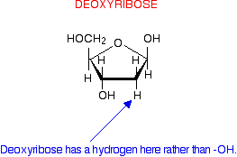
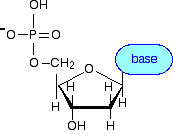
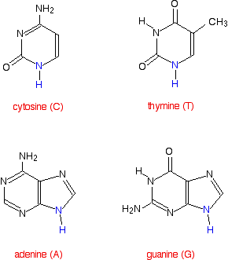
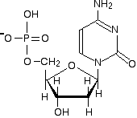
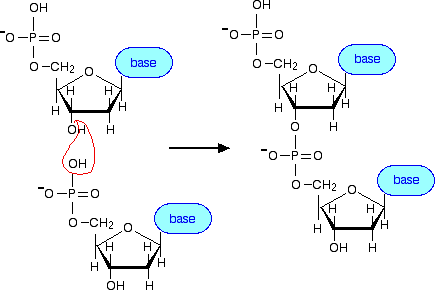
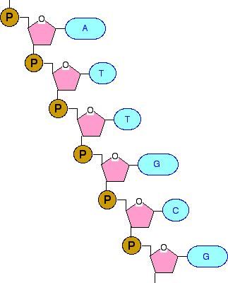
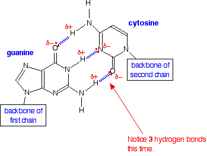

|
DNA - STRUCTURE This page, looking at the structure of DNA, is the first in a sequence of pages leading on to how DNA replicates (makes copies of) itself, and then to how information stored in DNA is used to make protein molecules. This material is aimed at 16 - 18 year old chemistry students. If you are interested in this from a biological or biochemical point of view, you may find these pages a useful introduction before you get more information somewhere else. | ||
|
Note: If you are doing biology or biochemistry and are interested in more detail you can download a very useful pdf file about DNA from the Biochemical Society. Chemistry students at UK A level (or its various equivalents) should not waste time on this. The booklet is written for A level biology students, and goes into far more detail than you will need for chemistry purposes. | ||
|
A quick look at the whole structure of DNA These days, most people know about DNA as a complex molecule which carries the genetic code. Most will also have heard of the famous double helix. I'm going to start with a diagram of the whole structure, and then take it apart to see how it all fits together. The diagram shows a tiny bit of a DNA double helix.
| ||
|
Note: This diagram comes from the US National Library of Medicine. You can see it in its original context by following this link if you are interested. Normally I prefer to draw my own diagrams, but my drawing software isn't sophisticated enough to produce convincing twisted "ribbons". | ||
|
Exploring a DNA chain The sugars in the backbone The backbone of DNA is based on a repeated pattern of a sugar group and a phosphate group. The full name of DNA, deoxyribonucleic acid, gives you the name of the sugar present - deoxyribose. Deoxyribose is a modified form of another sugar called ribose. I'm going to give you the structure of that first, because you will need it later anyway. Ribose is the sugar in the backbone of RNA, ribonucleic acid.
This diagram misses out the carbon atoms in the ring for clarity. Each of the four corners where there isn't an atom shown has a carbon atom. The heavier lines are coming out of the screen or paper towards you. In other words, you are looking at the molecule from a bit above the plane of the ring. So that's ribose. Deoxyribose, as the name might suggest, is ribose which has lost an oxygen atom - "de-oxy".  The only other thing you need to know about deoxyribose (or ribose, for that matter) is how the carbon atoms in the ring are numbered. The carbon atom to the right of the oxygen as we have drawn the ring is given the number 1, and then you work around to the carbon on the CH2OH side group which is number 5.
You will notice that each of the numbers has a small dash by it - 3' or 5', for example. If you just had ribose or deoxyribose on its own, that wouldn't be necessary, but in DNA and RNA these sugars are attached to other ring compounds. The carbons in the sugars are given the little dashes so that they can be distinguished from any numbers given to atoms in the other rings. You read 3' or 5' as "3-prime" or "5-prime". Attaching a phosphate group The other repeating part of the DNA backbone is a phosphate group. A phosphate group is attached to the sugar molecule in place of the -OH group on the 5' carbon.
| ||
|
Note: You may find other versions of this with varying degrees of ionisation. You may find a hydrogen attached instead of having a negative charge on one of the oxygens, or the hydrogen removed from the top -OH group to leave a negative ion there as well. I don't want to get bogged down in this. The version I am using is fine for chemistry purposes, and will make it easy to see how the DNA backbone is put together. We are soon going to simplify all this down anyway! | ||
|
Attaching a base and making a nucleotide The final piece that we need to add to this structure before we can build a DNA strand is one of four complicated organic bases. In DNA, these bases are cytosine (C), thymine (T), adenine (A) and guanine (G). | ||
|
Note: These are called "bases" because that is exactly what they are in chemical terms. They have lone pairs on nitrogens and so can act as electron pair donors (or accept hydrogen ions, if you prefer the simpler definition). This isn't particularly relevant to their function in DNA, but they are always referred to as bases anyway. | ||
|
These bases attach in place of the -OH group on the 1' carbon atom in the sugar ring.  What we have produced is known as a nucleotide. We now need a quick look at the four bases. If you need these in a chemistry exam at this level, the structures will almost certainly be given to you. Here are their structures:  The nitrogen and hydrogen atoms shown in blue on each molecule show where these molecules join on to the deoxyribose. In each case, the hydrogen is lost together with the -OH group on the 1' carbon atom of the sugar. This is a condensation reaction - two molecules joining together with the loss of a small one (not necessarily water). For example, here is what the nucleotide containing cytosine would look like:  | ||
|
Note: I've flipped the cytosine horizontally (compared with the structure of cytosine I've given previously) so that it fits better into the diagram. You must be prepared to rotate or flip these structures if necessary. | ||
|
Joining the nucleotides into a DNA strand A DNA strand is simply a string of nucleotides joined together. I can show how this happens perfectly well by going back to a simpler diagram and not worrying about the structure of the bases. The phosphate group on one nucleotide links to the 3' carbon atom on the sugar of another one. In the process, a molecule of water is lost - another condensation reaction.  . . . and you can continue to add more nucleotides in the same way to build up the DNA chain. Now we can simplify all this down to the bare essentials! | ||
|
Note: You will notice that I have drawn the P-O bonds attaching to the two sugar molecules opposite each other in the diagram above. You will also find diagrams where they are drawn at right angles to each other. Which is right? Both are right and, equally, both are misleading! The shape of the bonds around the phosphorus atom is tetrahedral, and all of the bonds are at approximately 109° to each other. Whichever way you choose to draw this in 2-dimensions on paper, it still represents the same molecule in reality. To take a simpler example, if you draw a structural formula for CH2Cl2 using simple bond notation, you could equally well draw the chlorine atoms at right angles to each other or opposite each other. The molecule would still be exactly the same. This is one of the things you had to learn when you first started drawing structures for organic molecules. If you still aren't sure about this, look again at the page about drawing organic molecules. | ||
|
Building a DNA chain concentrating on the essentials What matters in DNA is the sequence the four bases take up in the chain. We aren't particularly interested in the backbone, so we can simplify that down. For the moment, we can simplify the precise structures of the bases as well. We can build the chain based on this fairly obvious simplification:
There is only one possible point of confusion here - and that relates to how the phosphate group, P, is attached to the sugar ring. Notice that it is joined via two lines with an angle between them. By convention, if you draw lines like this, there is a carbon atom where these two lines join. That is the carbon atom in the CH2 group if you refer back to a previous diagram. If you had tried to attach the phosphate to the ring by a single straight line, that CH2 group would have got lost! Joining up lots of these gives you a part of a DNA chain. The diagram below is a bit from the middle of a chain. Notice that the individual bases have been identified by the first letters of the base names. (A = adenine, etc). Notice also that there are two different sizes of base. Adenine and guanine are bigger because they both have two rings. Cytosine and thymine only have one ring each.  If the top of this segment was the end of the chain, then the phosphate group would have an -OH group attached to the spare bond rather than another sugar ring. Similarly, if the bottom of this segment of chain was the end, then the spare bond at the bottom would also be to an -OH group on the deoxyribose ring. Joining the two DNA chains together The importance of "base pairs" Have another look at the diagram we started from:
If you look at this carefully, you will see that an adenine on one chain is always paired with a thymine on the second chain. And a guanine on one chain is always paired with a cytosine on the other one. So how exactly does this work? The first thing to notice is that a smaller base is always paired with a bigger one. The effect of this is to keep the two chains at a fixed distance from each other all the way along. But, more than this, the pairing has to be exactly . . .
That is because these particular pairs fit exactly to form very effective hydrogen bonds with each other. It is these hydrogen bonds which hold the two chains together. The base pairs fit together as follows. The A-T base pair:
The G-C base pair:  If you try any other combination of base pairs, they won't fit! | ||
|
Note: If the structures confuse you at first sight, it is because the molecules have had to be turned around from the way they have been drawn above in order to make them fit. Be sure that you understand how to do that. As long as you were given the structures of the bases, you could be asked to show how they hydrogen bond - and that would include showing the lone pairs and polarity of the important atoms. If hydrogen bonding worries you, follow this link for detailed explanations. Use the BACK button on your browser to return here later. | ||
|
A final structure for DNA showing the important bits
| ||
|
Note: You might have noticed that I have shorten the chains by one base pair compared with the previous diagram. There isn't any sophisticated reason for this. The diagram just got a little bit too big for my normal page width, and it was a lot easier to just chop a bit off the bottom than rework all my previous diagrams to make them slightly smaller! This diagram only represents a tiny bit of a DNA molecule anyway. | ||
|
Notice that the two chains run in opposite directions, and the right-hand chain is essentially upside-down. You will also notice that I have labelled the ends of these bits of chain with 3' and 5'. If you followed the left-hand chain to its very end at the top, you would have a phosphate group attached to the 5' carbon in the deoxyribose ring. If you followed it all the way to the other end, you would have an -OH group attached to the 3' carbon. In the second chain, the top end has a 3' carbon, and the bottom end a 5'. This 5' and 3' notation becomes important when we start talking about the genetic code and genes. The genetic code in genes is always written in the 5' to 3' direction along a chain. It is also important when we take a very simplified look at how DNA makes copies of itself on the next page . . .
© Jim Clark 2007 (modified May 2016) |
||